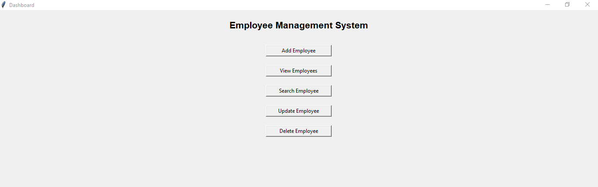

Employee Management System
Desktop Application

Description
Developed a desktop-based Employee Management System to streamline the storage, management, and retrieval of employee information. The application enables efficient handling of employee records through a centralized system, reducing manual effort and improving data organization.
Implemented core functionalities including employee record creation, modification, deletion, and search operations while ensuring data accuracy and consistency. Integrated database management capabilities to maintain structured employee data and support seamless information retrieval.
This project demonstrates proficiency in application development, database integration, problem-solving, and software design principles. It provided practical experience in developing user-focused solutions and implementing CRUD operations within a desktop environment.
Tech Stack
- Python
- MySQL
- Tkinter
- PyMySQL
Key Features
- Add Employee Records
- Update Employee Details
- Delete Employee Records
- Search Employee Information
- Store Data in Database
- User-Friendly Interface
Learning Outcomes
- Database Integration with Python
- Implementation of CRUD Operations
- GUI Development using Tkinter
- Problem Solving and Debugging
- Application Design and Development
My Role
Designed and developed the complete application independently, including the graphical user interface, business logic, database integration, testing, and implementation.
Project Status
Completed
Personal Portfolio Website
Responsive Web Portfolio
Description
Designed and developed a personal portfolio website to showcase my education, technical skills, internship experience, projects, and professional profiles. The website serves as a centralized platform for presenting my academic background and development journey.
Created a clean and responsive user interface using HTML and CSS, ensuring compatibility across desktop and mobile devices. Implemented multi-page navigation to provide an organized browsing experience.
This project demonstrates my understanding of front-end web development, responsive design principles, user interface design, and website structuring using modern HTML and CSS practices.
Tech Stack
Key Features
- Responsive Design
- Multi-Page Navigation
- Education Section
- Experience Section
- Projects Showcase
- Contact Information
- GitHub and LinkedIn Integration
Learning Outcomes
- Semantic HTML Structure
- CSS Styling and Layout Design
- Responsive Web Design
- Website Navigation Implementation
- User Interface Design
My Role
Independently designed and developed the complete website, including page structure, styling, navigation, content organization, and deployment.
Project Status
Completed
E-Commerce Sales Analytics Dashboard
Data Analytics Project

Description
Developed an interactive 3-page Power BI dashboard to analyze over 10,000 e-commerce sales records, providing insights into sales performance, customer behavior, and product analytics through KPIs and interactive visualizations.
Performed data cleaning, preprocessing, feature engineering, and exploratory data analysis (EDA) using Python. Built DAX measures to calculate key business metrics including Total Sales, Total Profit, Total Orders, Profit Margin, and customer/product performance indicators.
Designed executive, customer, and product analytics dashboards with slicers, trend analysis, and business insights to support data-driven decision-making.
Tech Stack
- Python
- Power BI
- DAX
- Excel
- Pandas
- NumPy
Key Features
- Interactive 3-Page Dashboard
- Executive Sales Dashboard
- Customer Analytics Dashboard
- Product Analytics Dashboard
- Interactive Filters & Slicers
- KPI Cards and Business Metrics
- Trend Analysis and Data Visualization
Learning Outcomes
- Data Cleaning and Preprocessing
- Exploratory Data Analysis (EDA)
- Business Intelligence with Power BI
- DAX Measure Development
- Interactive Dashboard Design
- Business Insight Generation
My Role
Independently completed the entire project, including data preprocessing in Python, business analysis, DAX development, dashboard design, visualization, and insight generation using Power BI.
Project Status
Completed